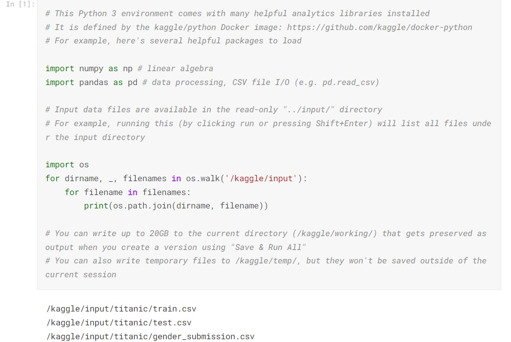
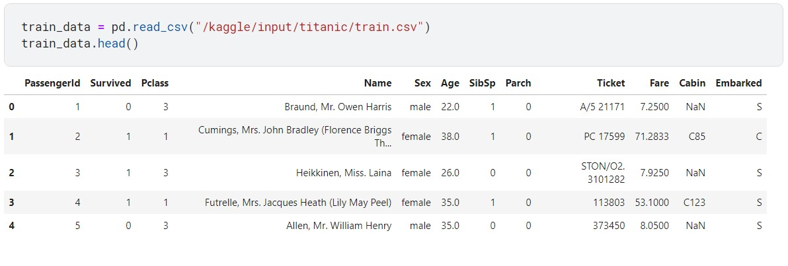
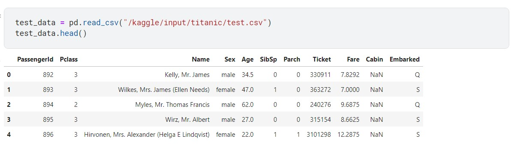
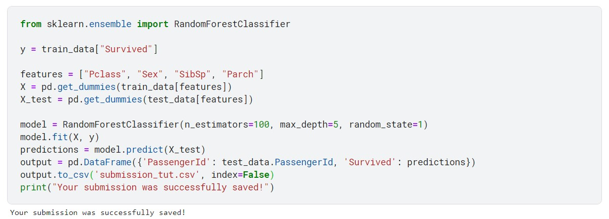
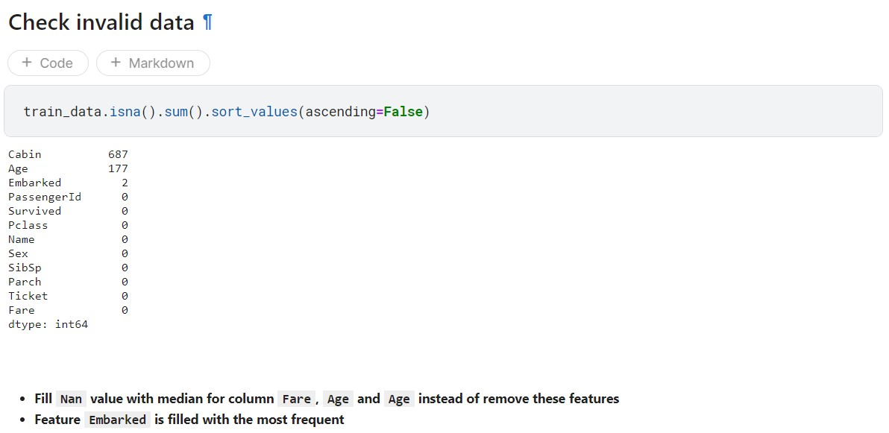
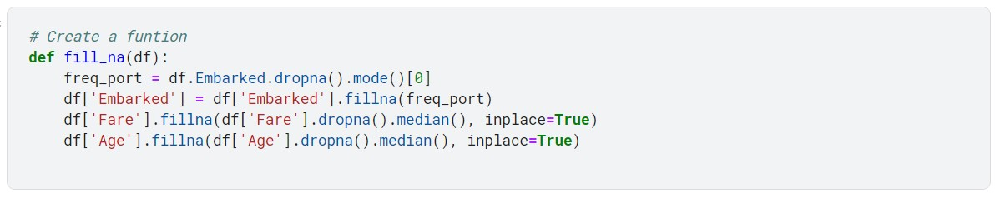
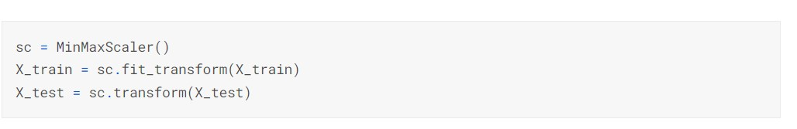

In this blog, I will explain how to use the Jupyter Notebook in Kaggle for the Titanic Challenge.
First of all, we need to import the library needed to process the data. In this example, we have to use numpy and pandas library.
We then can check the data to see how much feature we have in the training and testing data  
As you can see in the data, we have various feature such as PasengerID, PClass, Age, Cabin, etc. In the tutorial, we use some of the features to build the classification. We can use "Pclass", "Sex", "SibSp", "Parch" to see how the model perform 
We use Random Forest Classifier in sklearn library to create the model. We will build 100 decision tree with the depth of the each tree is 5 level. Then the model is trained and get the prediction to submit to Kaggle. This is simply the submission to Kaggle with the score of 0.775.
Contribution
Realize that some of the value in the features is missed. We can treat those features by filling the meadian for NaN value instead of remove those features.  
I also normalized the data so that all the features should be in the same scale. It helps avoiding the case where one feature has a large amplitude and the model will be bias to that features. 
Tested with other techniques including hyperparameter turning and try other model such as Support Vector Machine and Linear Regression. I can improve the performance significantly (upto 0.95). For more detail about the performance and tecnique, you can refer my Notebook